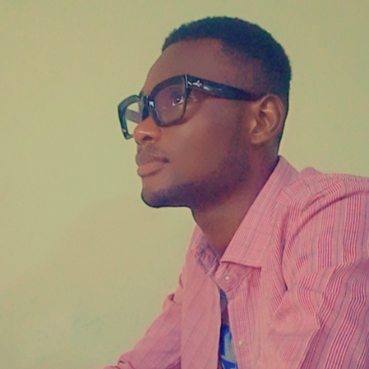

Esumei David | WDD 130

Hello! My name is Esumei David and I am from Lagos, Nigeria. I enjoy writing, reading and singing. I am an introvet. my favorite sport is table tennis, although i'm not very good at it. I'm currently studying Software Development at BYU-idaho and I am really enjoying it. I'm not a football fan but I have interest in Basketball. When I am down I love being alone, what motivates me at those moments are musics, graphical novels and at times movies and animation.
- LIST OF MY FAVOURITE TEMPLES